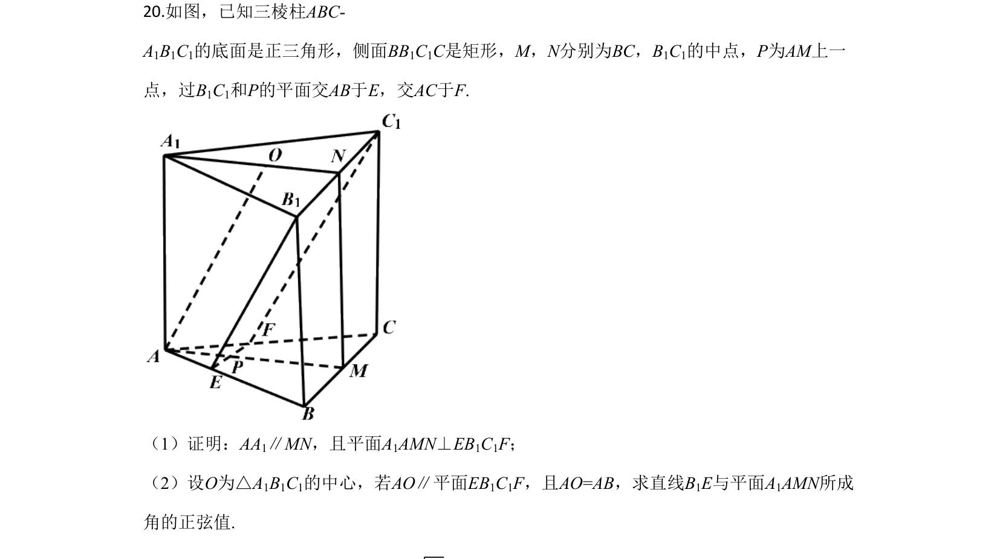
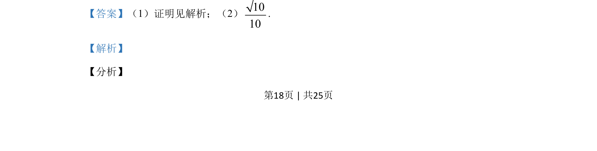

考点：立体几何 线面关系 空间向量

正三角形底面三棱柱中，证AA₁//MN且平面A₁AMN⊥EB₁C₁F，再求直线B₁E与平面A₁AMN所成角正弦值√10/10。

📄 原 PDF 第 18 页：
素材/真题/吉林/2008-2024·（吉林）数学高考真题/2020年高考数学试卷（理）（新课标Ⅱ）（解析卷）.pdf
20.如图，已知三棱柱ABC- A1B1C1的底面是正三角形，侧面BB1C1C是矩形，M，N分别为BC，B1C1的中点，P为AM上一 点，过B1C1和P的平面交AB于E，交AC于F. （1）证明：AA1∥MN，且平面A1AMN⊥EB1C1F； （2）设O为△A1B1C1的中心，若AO∥平面EB1C1F，且AO=AB，求直线B1E与平面A1AMN所成 角的正弦值.
【答案】（1）证明见解析；（2）1010 . 【解析】 【分析】